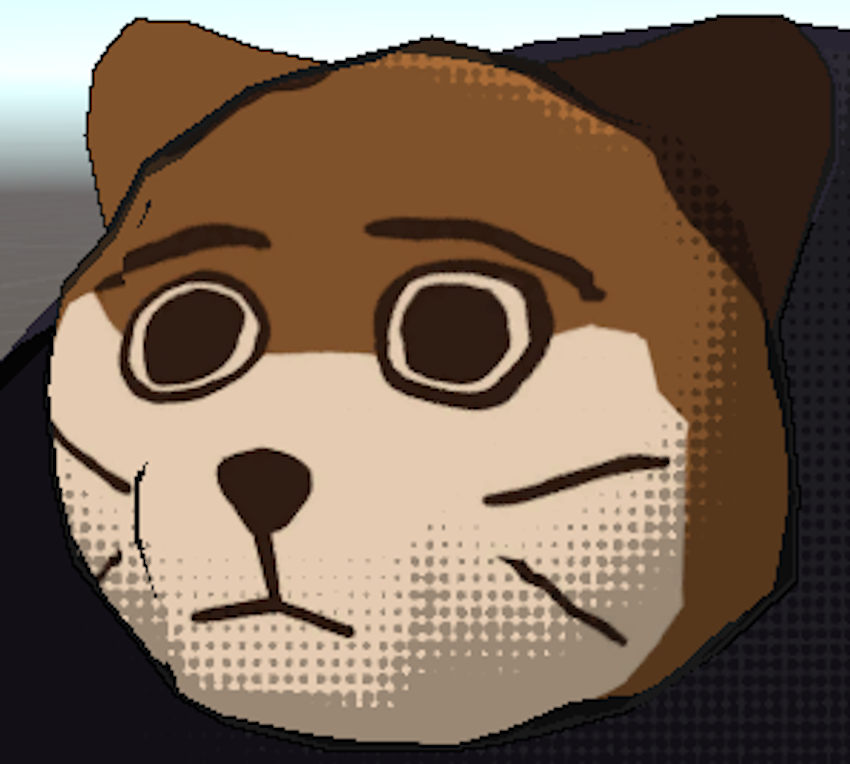
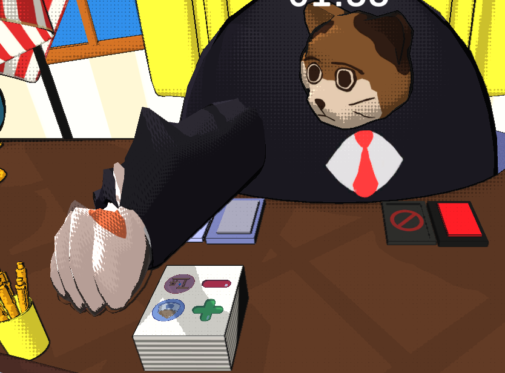
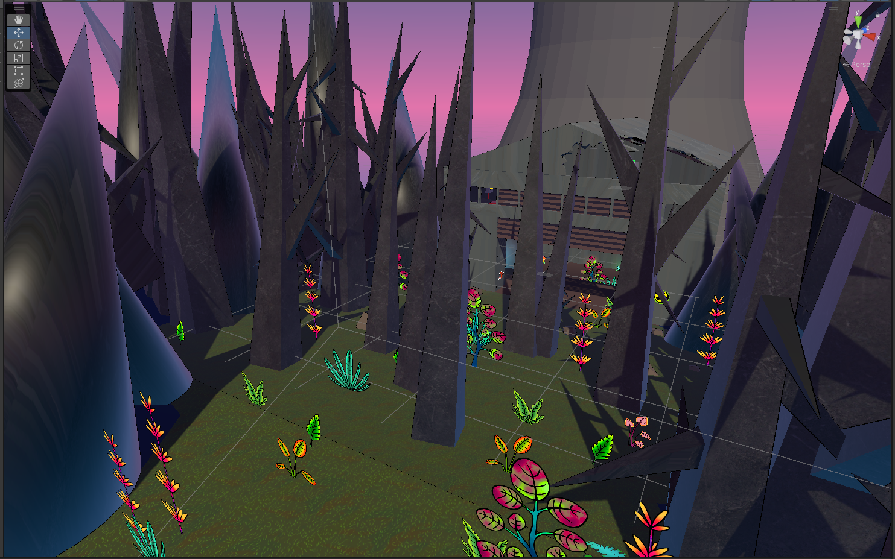

Technical Art
Shaders
Cel Shading
I created custom shaders to give the game a style that resembled political posters/cartoons using Unity's ShaderLab language. I used cel shading and a combination of different outline techniques, like utilizing camera-facing normals and the depth buffer.
Halftone Shadows



I applied a halftone patterned mask to the shading to enhance the cartoony/poster style. The mask had an adjustable tiling factor that could be used to tweak how large the halftone dots should appear. Additionally, it scaled the tiling to create consistency over different resolutions and applied anti-aliasing. This effect utilized the advantage of the game having a fixed camera.
Real-Time 3D Smears


(gif framerate slowed to make smears more visible)
I created a real-time smear effect to accentuate the movement of the arm slams. This was accomplished in the vertex shader by keeping track of previous positions and rotations and offsetting with accounting for distance from the pivot point. I had it smear more on the backside of the movement, to create trails while still maintaining the front edge of the movement. The previous position buffer dynamically adjusted the delay based on the current framerate.
Raw WebGL Graphics Programming
|
XXX | Toggle animation: |
|
Control the Camera by holding down m1 and dragging over the canvas, or using the sliders below.
Camera X Angle Camera Y Angle |
Manually edit the angles used in the pose with the sliders below while the animation is off.
Angle1 Angle2 |
Production
Whisker President
As production lead, I led semiweekly meetings, coordinating and checking in with team members both remotely and in person, as well as both synchronously and asynchronously. I managed a production schedule with trello and spreadsheets over the course of 6 three-week sprints. I pitched the game concept to recruit the team. At the end of each sprint I gave progress report presentations to peers and course instructors standing in as a publisher, with a vertical slice presentation at the 10 week mark. At the end, we presented a pitch for prospective publishers for marketing budget and further development. I was also in charge of the backend for launching the game on Steam.
Pitch Deck
3D Pipeline
All modeled, textured, rigged, and animated by me in Blender and Adobe Substance 3D Painter.

Game Design
Whisker President

I led brainstorming and design discussions in meetings throughout the 20-week project covering almost every aspect of the game. Primarily, I focused on designing the behavior of the titular cat president and the systems with which the cat interacts. To do this, I helped design a series of lo-fi physical prototypes for quickly and cheaply playtesting game concepts. These in particular were a lot of fun. In the Unity engine, I implemented the cat’s arm and head movement, as well as the functionality of interacting with the papers (picking them up, stamping them) using C#.
Something Valued
I was the level and mechanics designer on a team of 10 for a 3D platforming game about a plant-covered skeleton exploring an abandoned nuclear power plant. I led design discussions in meetings about level designs and game mechanics. In the Unity engine, I created and managed prefab standards and file organization, and directed 3 others on working with Unity 3D developing environment and prefabs.
I also helped run regular playtests throughout the entire development period, as well as organized the feedback.

Anyone Can Cook!
I worked to design linked systems for a digital and physical card game simulating competitive cooking and thematically adapting an existing property. I wrote the rules and organized a succinct rulebook to make it easy to pick up and play. I ran playtests, organized feedback, and made iterative changes to systems and rulebook with the help of spreadsheets.
Programming
Languages: C, C++, C#, Python, JavaScript, Java
Other Skills
2D Art |
GermanEight years of speaking & writing in German. |
Instruction and InterpretationI have experience with docent work at Natural Bridges State Beach, and creating and teaching a Java programming class for middle schoolers. |